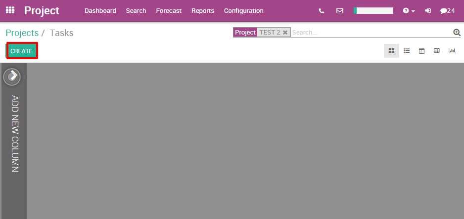
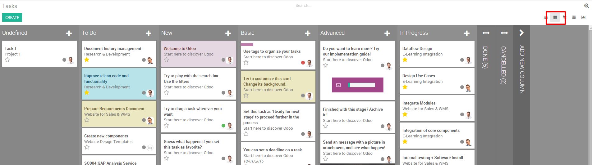

Как визуализировать задачи проекта
Задачи - это задания, которые ваши сотрудники выполняют в рамках проекта. На координацию выполнения всех большого количества задач в срок требуется большое количество ресурсов. Odoo позволяет вам эффективно визуализировать и организовывать различные задачи, которые выполняются на вашем предприятии.
Настройка
Единственной необходимой настройкой является установка модуля Управления проектами (Project) в модуле Приложения (Apps).

Создание задач
После создания проекта вы можете легко создавать для него задачи. Просто откройте проект и нажмите «Создать задачу».
Затем укажите имя своей задаче, проект, в рамках которого выполняется задача, заполниться автоматически, выберете ответственного исполнителя и срок завершения, если он есть.

Обзор проекта на канбан-доске
После того, как вы создали несколько задач, они могут управляться и отслеживаться на Канбан-доске.
На Канбан-доске задачи представлены в виде карточек, разнесенные по столбцам (этапам). Это позволяет вам иметь четкое представление о том, на каком этапе находятся каждая из задач. Также видно какие из них имеют более высокий приоритет.
Канбан-доска - это представление по умолчанию при просмотре проекта, но если вы выбрали другое представление, вы можете вернуться к нему в любой момент, щелкнув логотип канбан-доски в правом верхнем углу
Как оповестить своих коллег о смене статуса задачи?

Сортировка задач по приоритету
В каждом из ваших столбцов вы можете сортировать свои задачи по приоритету. Задачи с более высоким приоритетом будут автоматически перемещены в верхнюю часть столбца. Достаточно нажать на звезду в левом нижнем углу карточки задачи для повышения ее приоритета. Не помеченные задачи Odoo автоматически присваивает приоритет в соответствии со сроками завершения.
Обратите внимание, что просроченные задачи, будут отображаться красным цветом (и на канбан-доске, и в виде списка), это сделано для упрощения контроля.

Следите за соблюдением сроков в режиме Календаря
Если вы добавите конечный срок в своей задаче, они отобразятся в режиме календаря. Для менеджера этот режим позволяет следить за всеми крайними сроками в одном месте.

Все задачи отмечены цветом, соответствующие назначенному им сотруднику. Вы можете отобразить задачи для конкретного сотрудника, пометив соответствующие поля справа от календаря.
Совет
Вы можете легко изменить крайний срок в режиме «Календарь», перетащив задачу в другое место.